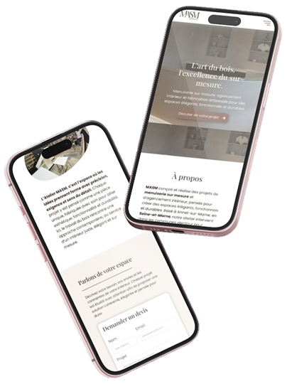

Aperçu du projet



MASM souhaitait un site vitrine à la hauteur de son savoir-faire : moderne, épuré et luxueux. L'enjeu principal était de créer une expérience fluide et inspirante, tout en guidant les visiteurs vers la prise de contact
Développer un site vitrine qui inspire confiance et génère des demandes de devis qualifiées.
Particuliers et professionnels à la recherche de solutions d'agencement sur-mesure haut de gamme.
Mettre en avant les réalisations sans surcharger les pages, optimiser pour le mobile et respecter l'identité graphique.
MASM est une entreprise artisanale de menuiserie basée en Seine-et-Marne. L'ancien site ne reflétait ni la qualité du savoir-faire ni le positionnement haut de gamme de l'entreprise.
Il fallait repartir de zéro : nouvelle identité graphique, nouveau site, nouvelle image.
L'ancien site ne reflétait pas le positionnement premium de l'entreprise. Il fallait créer une identité visuelle cohérente et élégante.
Le site devait guider les visiteurs vers la prise de contact tout en mettant en avant les réalisations sans surcharger.
La majorité des visiteurs arrivent depuis mobile. L'expérience devait être pensée responsive dès la conception.
De la charte graphique au site en ligne, un processus complet en une semaine.
Compréhension des besoins et du positionnement
Couleurs, typographies et identité visuelle
Design desktop et mobile sur Figma
Développement WordPress avec Elementor
Optimisation et lancement du site

Discutons de votre projet autour d'un café virtuel.
Je serais ravie de donner vie à vos idées !